|
|
|
lornaland.co.uk Holidays Photo Gallery Lornaland Natter USA 2005 Journal Menu...New YorkBoston Cooperstown Buffalo Las Vegas Death Valley Yosemite National Park San Francisco San Simeon Los Angeles San Diego Boston Pictures |
Boston6th - 8th September 2005Tuesday 6th September 2005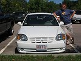 Today we left for pastures new. It kinda felt like our American Adventure was properly starting now, it's all real! After initial problems locating our car hire company (they'd relocated and neglected to tell us) we were introduced to our little car for the next few days - a white Hyundai Accent from Massachusetts called "Harry". 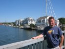 All settled in, we headed north out of NYC on our way to Boston. It was around 10.00am when we left NYC and we arrived in Boston around 4.00pm. The trip was just under 250 miles which took us out of New York state, through Connecticut and Rhode Island and into Massachusetts. We stopped off for a brief visit in Mystic Seaport. It was a strange little town with a very ugly bridge. The Copley Square Hotel, our home for the next 3 nights was a far cry from our hotel in NYC, positively swanky in comparison! After some relaxing time and a nice refreshing shower, we headed out into Boston in search of food. 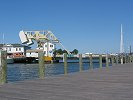 We found Newbury Street with a few restaurants mixed into basements and ground floors of houses alongside shops and flats which was quite nice. We finally settle on an Italian place though my chicken choice was a little disappointing. We headed back to the hotel and had a nightcap in the bar before heading off to bed. Wednesday 7th September 2005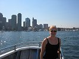 Our first day in Boston. After the hectic days in NYC, we treated ourselves to a little lie-in and lazy morning, waking up at 9.00am. Soon we were running out of time and we dashed straight off to Long Wharf where we were due to get the 12.00pm Boston Harbour Cruises whale watching tour. We'd missed breakfast so had to make do with some hot dogs while waiting for the boat to depart. 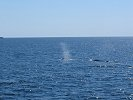 Once on board, we took up our position on the top deck and headed out to sea. We were told the journey out to Stellwagen Bank would take around and hour where we would should hopefully see Finback, Minke and Humpback whales. It was on the boat that I had my first beer, a bottle of Corona. I didn't mind it too much, mainly due to the lime. 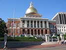 After about 40 minutes we came across our first whale sighting. There were a couple of Finback whales swimming about much nearer than normal so we stopped for a while to watch them. Apparently Finback whales are the second largest mammal after the blue whale but it was quite to hard to see how big they actually were. I was disappointed I didn't see them flip their tails in the air but we were informed that it's Humpback whales who do that so I was hoping we'd get to see one. 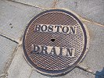 We soon received information that Humpback's had been spotted out in Stellwagen Bank so we headed off in search of them. Luckily, we weren't disappointed. I was very excited though it's very hard to predict just where he'll come back up so we were having to keep and eye out for the tell tale bubbles which surface in a green glow just before they appear. 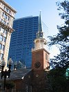 After the tour, we headed off to Boston Common, to the start of the Freedom Trail. I'd read in a guidebook that you could get free maps a little way round the trail which was also better than the one bought at the start so we decided to save our $1.50 and headed off. It was a bit of a mistake not to get one at the start as we never found the free maps and painted red line on the ground would sometimes disappear. It was getting quite late so we rushed round a bit and decided not to go aboard the US Constitution. 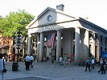 For dinner, we headed over to Quincy's Market area and found an old Yankee cooking style place called Durgin Park. The food was very nice, good old chicken wings followed by Boston baked beans (which I still didn't like) and cheeseburgers. Halfway through our meal a man from the bar came over and asked if we wanted a shot of Jack Daniels. He'd been buying them for everyone in the place and when we asked what we were celebrating he replied "we're celebrating Jack!". Very strange. Thursday 8th September 2005We left Boston for the day and went on a day trip north, through Massachusetts, New Hampshire and into Maine. Our first stop was Salem, famed for witch trials. We had a little wander round the square before going into the Salem Witch Museum to learn all about the witch trials. The museum was quite funny, but fun. Very interesting to see the American's take on history. 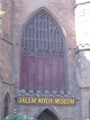After Salem we hit the road again and continued north on the 1A, the most annoying road on earth. After wasting 2 hours we reached our next stop, Portsmouth. By now it was around 4.00pm so we had a quick look round and decided to head further north to visit the beach and to come back to Portsmouth for food. By the time we made it to York Beach in Maine it was getting a bit chilly and misty so we didn't stay too long, just long enough for Dan to do his first mission of the holiday, plodge in the Atlantic. 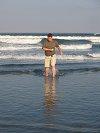 Back in Portsmouth, we found a real American sports bar called The Rusty Hammer. Dan tried the local speciality, Clam Chowder which although nice at first, turned out to be quite sickly by the end. We headed back to Boston on the interstate which took us a lot less time, just over an hour. It was quite annoying that we'd spent so much of our day stuck on the slow boring road but on the other hand, we'd got to see some of the little American towns. Back at the hotel and time to blow some more money on yummy cocktails and whiskey before bed. |